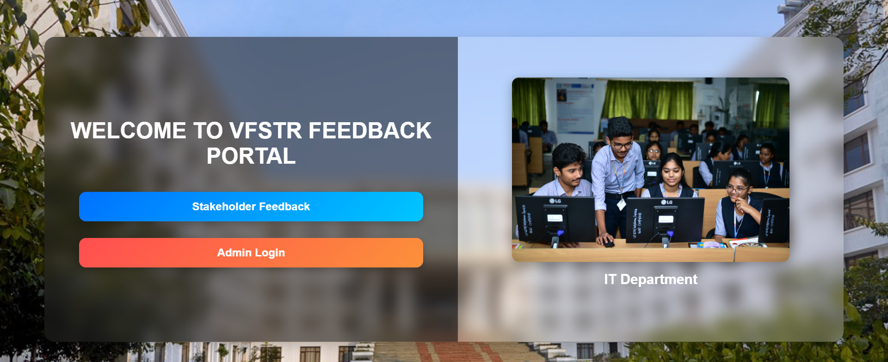
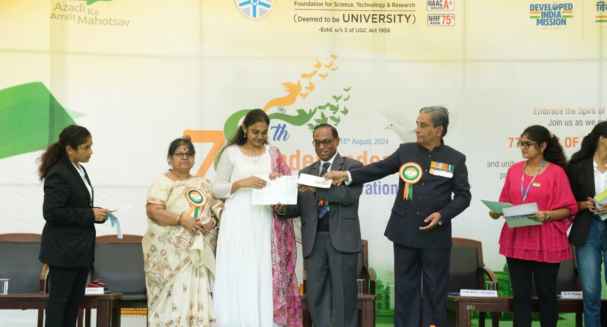
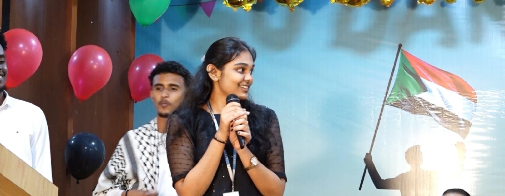

Developed a Full-Stack Feedback Analysis Portal for universities to collect, analyze, and visualize student feedback data. The system enables institutions to make data-driven decisions for improvement. Secured First Prize for innovative thinking and practical impact.
Participated in the Independence Day Celebrations Debate Competition, discussing the topic "Non-Violence vs. Violence: Which Helped India More?" Demonstrated strong argumentation and critical thinking skills, securing Third Prize for exceptional debating abilities.
Won Two Ideathon Prizes:
Recognized as an Outstanding Public Speaker in multiple elocution and debate competitions. This recognition was based on my ability to engage audiences, present ideas confidently, and deliver impactful speeches. It has helped me develop leadership and communication skills that are essential in professional and academic settings.
